0x00 前言
在术的 道路上，从来都是独善其行，如能结余同行，自当求之不得。
玄幻小说的世界结构，放之现代也是同理，望成之所成，念之所念。
0x01 什么是COM
什么是COM，说白了，就是一堆功能相关的interface，它是某种语言向另一种语言暴露功能的最大单位。
COMcomponent（COM组件）是微软公司为了计算机工业的软件生产更加符合人类的行为方式开发的一种新的软件开发技术。
在COM构架下，人们可以开发出各种各样的功能专一的组件，然后将它们按照需要组合起来，构成复杂的应用系统。 由此带来的好处是多方面的： 可以将系统中的组件用新的替换掉，以便随时进行系统的升级和定制； 可以在多个应用系统中重复利用同一个组件； 可以方便的将应用系统扩展到网络环境下； COM与语言，平台无关的特性使所有的程序员均可充分发挥自己的才智与专长编写组件模块。
COM的最核心的思想，说白了就是要做个跨语言的 “class” “object” “function” 。
0x02 它解决了什么问题
每一种技术的出现，都是为了解决另一个问题而诞生的。
1、代码共用问题
2、版本问题
3、调用其它软件的功能
4、所有代码均可以面向对象
从以上四点可以看出，COM技术可以说是非常强大的一门技术，而且Windows编程也是会用到该技术。
0x03 什么是CLSID
当初微软设计com规范的时候，有两种选择来保证用户的设计的com组件可以全球唯一：
第一种是采用和Internet地址一样的管理方式，成立一个管理机构，用户如果想开发一个COM组件的时候需要向该机构提出申请，并交一定的费用。
第二种是发明一种算法，每次都能产生一个全球唯一的COM组件标识符。
第一种方法，用户使用起来太不方便，微软采用第二种方法，并发明了一种算法，这种算法用GUID（Globally Unique Identifiers）来标识COM组件，GUID是一个128位长的数字，一般用16进制表示。 算法的核心思想是结合机器的网卡、当地时间、一个随即数来生成GUID。 从理论上讲，如果一台机器每秒产生10000000个GUID，则可以保证（概率意义上）3240年不重复。
GUID的例子： 54BF6567–1007–11D1–B0AA–444553540000
HKEY_CLASSES_ROOT\CLSID{002B9E07-2E10-438F-AF1E-40E6A96F1EE4}
在微软的COM中GUID和UUID、CLSID、IID是一回事，只不过各自代表的意义不同：
UUID ： 代表COM
CLSID ： 代表COM组件中的类
IID ： 代表COM组件中的接口
在程序中，实际对象数据对应的处理程序路径string往往不尽相同，比如有的放C盘有的D盘，微软想出了一个解决方案，那就是不使用直接的路径表示方法，而使用一个叫 CLSID的方式间接描述这些对象数据的处理程序路径。
CLSID 其实就是一个号码，CLSID 的结构定义如下：
1 2 3 4 5 6 7 8 9 10 11 12 13 14 15 16 17 typedef struct _GUID { DWORD Data1; WORD Data2; WORD Data3; BYTE Data4[8 ]; } GUID; typedef GUID CLSID; typedef GUID IID; \#define REFCLSID const CLSID & // 常见的声明和赋值方法 CLSID CLSID_Excel = {0x00024500 ,0x0000 ,0x0000 ,{0xC0 ,0x00 ,0x00 ,0x00 ,0x00 ,0x00 ,0x00 ,0x46 }}; struct __declspec (uuid ("00024500-0000-0000-C000 -000000000046")) CLSID_Excel ;class DECLSPEC_UUID ("00024500-0000-0000-C000-000000000046" ) CLSID_Excel; // 注册表中的表示方法 {00024500-0000-0000 -C000-000000000046 }
下面，我们用python生成一个CLSID：
1 2 3 4 5 6 7 C:\Users\shiyan>python3 Python 3.7.0 (v3.7.0 :1 bf9cc5093, Jun 27 2018 , 04 :59 :51 ) [MSC v.1914 64 bit (AMD64)] on win32 Type "help" , "copyright" , "credits" or "license" for more information. >>> import pythoncom >>> print(pythoncom.CreateGuid()) {DE6F358D-A750-49 D5-9217-196E05 B3E2AE} >>>
0x04 COM组件与注册表关系
这就要说道COM的调用过程了，通常我们编写好一个COM组件，都需要注册到注册表中（也可以设置不用注册的COM组件，但是一般都是使用的注册方法），这样当我调用COM组件的这个功能的时候，程序会进注册表进行读取相应位置的DLL或者EXE，加载到进程还是线程中来，供我们使用。
注册表： 计算机\HKEY_CLASSES_ROOT\CLSID\{20D04FE0-3AEA-1069-A2D8-08002B30309D}
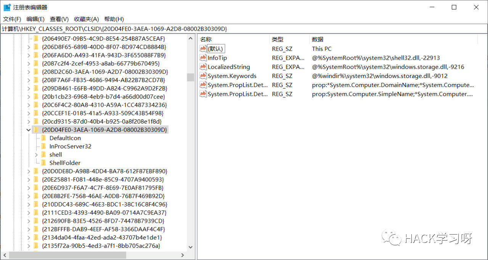
这个是“我的电脑”的注册表相关信息。
而且，我们可以通过 WIN + R 打开运行窗口，输入 ::{20D04FE0-3AEA-1069-A2D8-08002B30309D} ，来直接打开我的电脑的界面。
注册表中，LocalServer32键表示可执行（exe）文件的路径、InprocServer32键表示动态链接库（DLL）文件的路径。 因为COM函数功能主要是通过这类文件来实现的。
0x05 实现一个COM组件
编写COM组件常规的来说，都是通过C++来编写的，然后再注册进注册表，不过我下面是通过python来编写一个COM组件，然后注册进表中。
DEMO代码如下：
NAME： testcom.py
1 2 3 4 5 6 7 8 9 10 11 12 13 class ShiYanDemo (object): _public_methods_ = [ 'CountNumber' ] _reg_progid_ = "ShiYanDemo.CountNumber" _reg_clsid_ = "{DE6F358D-A750-49D5-9217-196E05B3E2AE}" def CountNumber (self,number1=0 ,number2=0 ): count1 = number1 + number2 return count1if __name__=='__main__' : print("Registering COM server" ) import win32com.server.register win32com.server.register.UseCommandLine(ShiYanDemo)
该DEMO主要的功能就是对number1和number2进行相加，返回两个值相加的和。
然后我们开始进行注册到注册表中。
1 2 3 4 5 6 7 E:\shiyanblog\博客草稿文件夹\2 _COM组件劫持原理与实践>python3 testcom.py Registering COM server Requesting elevation and retrying... Registering COM server Registered: ShiYanDemo.CountNumber E:\shiyanblog\博客草稿文件夹\2 _COM组件劫持原理与实践>
操作相关注册表毕竟属于高危操作，360进行了拦截。
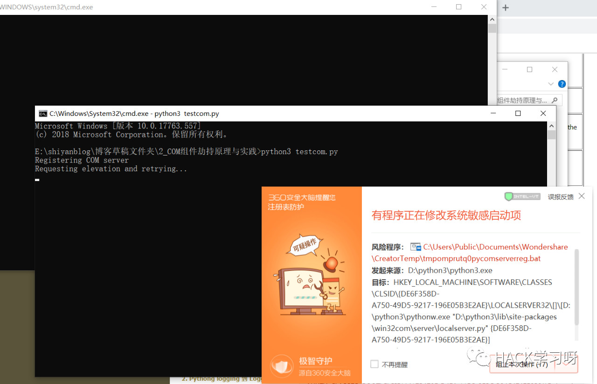
我们选择放行即可，然后就可以看到注册成功了。
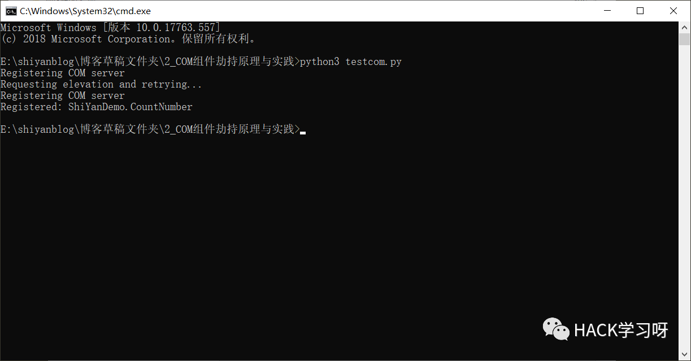
然后我们进入到注册表中，查看下相关注册的信息。
计算机\HKEY_CLASSES_ROOT\CLSID\{DE6F358D-A750-49D5-9217-196E05B3E2AE}
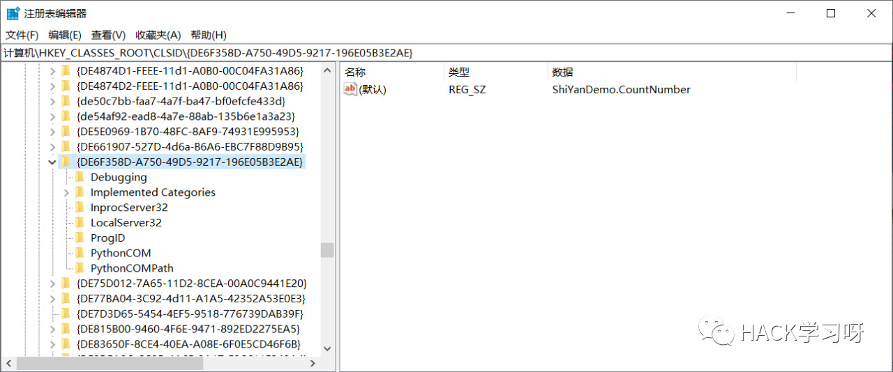
我们把该条注册表信息，导出来，就可以详细的看到相关信息了。
1 2 3 4 5 6 7 8 9 10 11 12 13 14 15 16 17 18 19 20 21 22 23 24 25 26 27 Windows Registry Editor Version 5.00 [HKEY_CLASSES_ROOT\CLSID\{DE6F358D-A750-49 D5-9217-196E05 B3E2AE}] @="ShiYanDemo.CountNumber" [HKEY_CLASSES_ROOT\CLSID\{DE6F358D-A750-49 D5-9217-196E05 B3E2AE}\Debugging] @="0" [HKEY_CLASSES_ROOT\CLSID\{DE6F358D-A750-49 D5-9217-196E05 B3E2AE}\Implemented Categories] [HKEY_CLASSES_ROOT\CLSID\{DE6F358D-A750-49 D5-9217-196E05 B3E2AE}\Implemented Categories\{B3EF80D0-68E2-11 D0-A689-00 C04FD658FF}] [HKEY_CLASSES_ROOT\CLSID\{DE6F358D-A750-49 D5-9217-196E05 B3E2AE}\InprocServer32] @="pythoncom37.dll" "ThreadingModel" ="both" [HKEY_CLASSES_ROOT\CLSID\{DE6F358D-A750-49 D5-9217-196E05 B3E2AE}\LocalServer32] @="D:\\python3\\pythonw.exe \"D:\\python3\\lib\\site-packages\\win32com\\server\\localserver.py\" {DE6F358D-A750-49D5-9217-196E05B3E2AE}" [HKEY_CLASSES_ROOT\CLSID\{DE6F358D-A750-49 D5-9217-196E05 B3E2AE}\ProgID] @="ShiYanDemo.CountNumber" [HKEY_CLASSES_ROOT\CLSID\{DE6F358D-A750-49 D5-9217-196E05 B3E2AE}\PythonCOM] @="testcom.ShiYanDemo" [HKEY_CLASSES_ROOT\CLSID\{DE6F358D-A750-49 D5-9217-196E05 B3E2AE}\PythonCOMPath] @="E:\\shiyanblog\\博客草稿文件夹\\2_COM组件劫持原理与实践"
按照常规的来说，COM组件都是C++编写的DLL或者EXE，这里我们是使用了python，所以相关注册信息和常规的有点不一样。
不过还是能看出来：
1 2 3 InprocServer32：pythoncom37.dll LocalServer32：D:\\python3\\pythonw.exe \"D:\\python3\\lib\\site-packages\\win32com\\server\\localserver.py\" {DE6F358D-A750-49D5-9217-196E05B3E2AE}
通过 “pythoncom37.dll” 和 “pythonw.exe” 来解释加载我们的 “E:\shiyanblog\博客草稿文件夹\2_COM组件劫持原理与实践 ”目录下 testcom 文件里 ShiYanDemo.CountNumber 类函数功能。
下面我们简单的使用下这个COM组件的功能。
1 2 3 4 5 6 7 8 9 10 E:\shiyanblog\博客草稿文件夹\2 _COM组件劫持原理与实践>python3 Python 3.7.0 (v3.7.0 :1 bf9cc5093, Jun 27 2018 , 04 :59 :51 ) [MSC v.1914 64 bit (AMD64)] on win32 Type "help" , "copyright" , "credits" or "license" for more information. >>> import win32com.client >>> a = win32com.client.Dispatch("ShiYanDemo.CountNumber" ) >>> a.CountNumber() 0 >>> a.CountNumber(1 ,2 ) 3 >>>
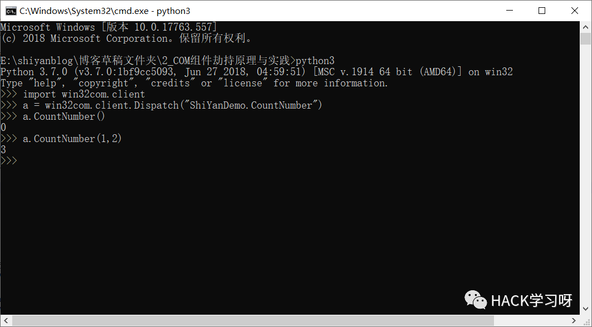
那我们用Excel中的VBA写一个调用看看吧！
1 2 3 4 5 6 7 8 Sub vbacom()Dim DemonumberSet Demonumber = CreateObject("ShiYanDemo.CountNumber" ) Sheet1.Cells(4 , 3 ) = Demonumber.CountNumber(1 , 3 ) Sheet1.Cells(5 , 3 ) = Demonumber.CountNumber(5 , 6 ) End Sub
效果如下：
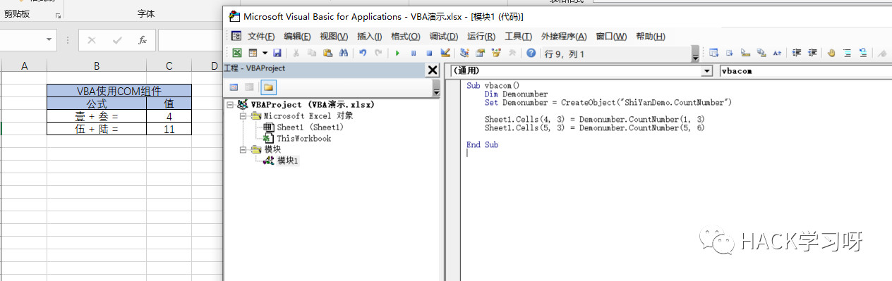
0x06 COM劫持原理
前面介绍了这么多，终于到正题上来了。
COM劫持，从根本上来说，就是在程序读取注册表信息中的DLL或者EXE功能的路径上，做一个拦截，让程序提前读取我们的设置好的恶意DLL或者EXE。 原理其实和DLL劫持差不多。
读取顺序如下：
HKEY_CURRENT_USER\Software\Classes\CLSID
HKEY_CLASSES_ROOT\CLSID
HKEY_LOCAL_MACHINE\SOFTWARE\Microsoft\Windows\CurrentVersion\ShellCompatibility\Objects\
我们来实际看一下程序读取注册表的顺序：
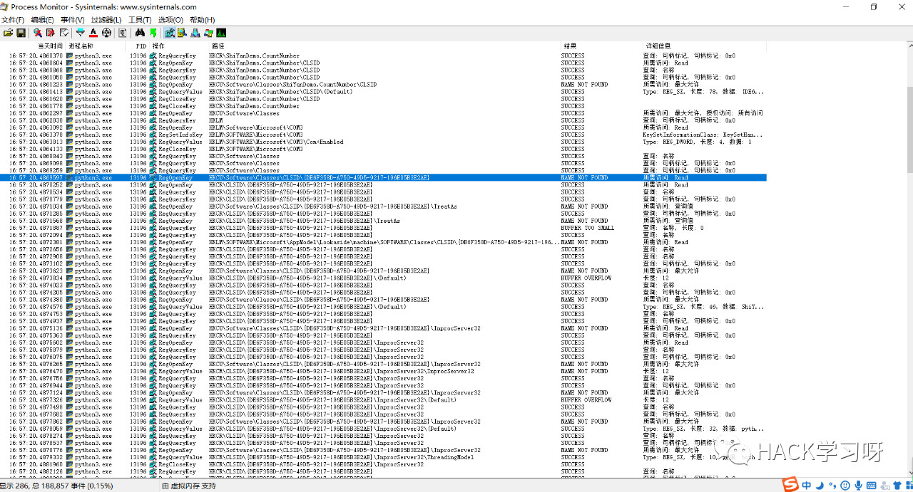
最上面的那个加载的CLSID是可以忽略的，应该默认注册本身不会注册到那里，而是注册HKEY_CLASSES_ROOT\CLSID 这个路径下，而通过截图同可以看到：
1 2 HKCU\Software\Classes\CLSID\{DE6F358D-A750-49 D5-9217-196E05 B3E2AE} NAME NOT FOUND HKCR\CLSID\{DE6F358D-A750-49 D5-9217-196E05 B3E2AE} SUCCESS
加载第一行是没有找见相关信息的，但是在第二行的时候，找见了相关信息，故此，这个就是一个可以劫持的过程。 我们只需要把需要劫持的相关路径注册到第一行中，等程序再次加载时，就会达到劫持效果。
0x07 实现一个COM劫持
继续沿用上面的 demo 来做为一个演示。
因为我们知道demo中，相关核心的功能参数在 testcom.py 中，我们只需要劫持该文件的访问路径，即可达到一个COM劫持的效果
首先，看一下程序加载 PythonCOMPath 路径的顺序：
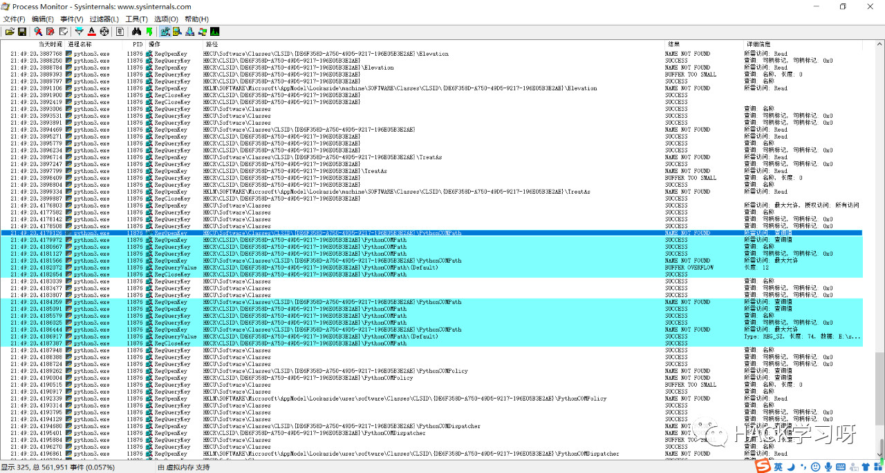
可以看到在加载默认一个路径时，显示的为未找到，但是在第二个默认路径中，是找到的。
那我们只需要把劫持的文件路径注册到第一个默认表中，即可。
NAME： 劫持DemoCom.reg
1 2 3 4 Windows Registry Editor Version 5.00 [HKEY_CURRENT_USER\Software\Classes\CLSID\{DE6F358D-A750-49 D5-9217-196E05 B3E2AE}\PythonCOMPath] @="E:\\"
NAME： E:\\ testcom.py
1 2 3 4 5 6 7 8 9 10 11 12 13 class ShiYanDemo (object): _public_methods_ = [ 'CountNumber' ] _reg_progid_ = "ShiYanDemo.CountNumber" _reg_clsid_ = "{DE6F358D-A750-49D5-9217-196E05B3E2AE}" def CountNumber (self,number1=0 ,number2=0 ): count1 = number1 * number2 return count1if __name__=='__main__' : print("Registering COM server" ) import win32com.server.register win32com.server.register.UseCommandLine(ShiYanDemo)
这里，我把核心函数的功能变成了 number1 乘以 number2 ，然后返回两个数据的积。
此时，我们双击下我们写好的劫持注册表 “劫持DemoCom.reg”，然后系统会提示注册成功，我们去注册表中看一下。
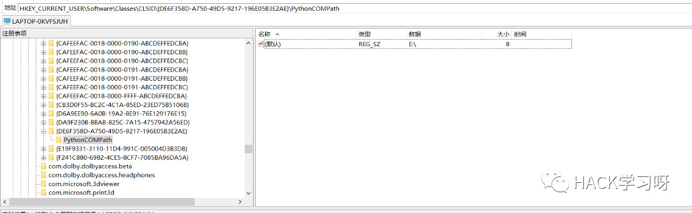
可以看到，我们已经注册成功，下面开始瞎几把劫持中。 。 。
1 2 3 4 5 6 7 8 C:\Users\shiyan>python3 Python 3.7.0 (v3.7.0 :1 bf9cc5093, Jun 27 2018 , 04 :59 :51 ) [MSC v.1914 64 bit (AMD64)] on win32 Type "help" , "copyright" , "credits" or "license" for more information. >>> import win32com.client >>> a = win32com.client.Dispatch("ShiYanDemo.CountNumber" ) >>> a.CountNumber(3 ,3 ) 9 >>>
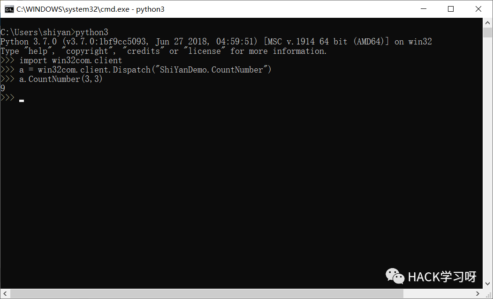
可以看到，我们已经劫持成功了，我们再从加载注册表的这个过程看一下吧。
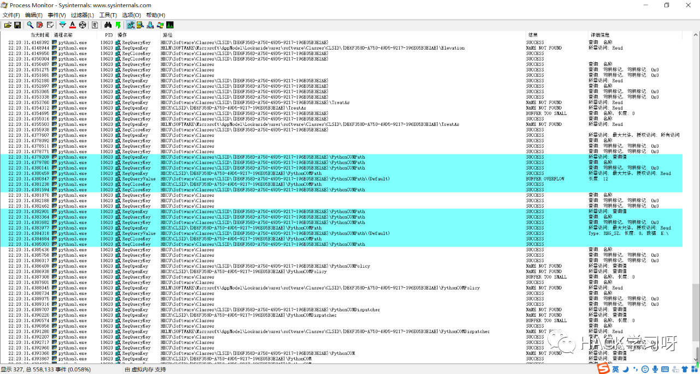
通过截图，可以看出，加载第一个默认路径时，已经成功了。
以上就是COM劫持的原理和实践。
0x08 等等，清除下小尾巴
这个注册表DEMO，对我们来说，只是一个演示使用，演示结束，肯定要清尾的。
一般来说，我们都是通过手工的去删除这个，不过手动删除可能存在删不全，所以可以使用以下方式进行清除。
1 2 3 4 5 6 7 E:\shiyanblog\博客草稿文件夹\2 _COM组件劫持原理与实践>python3 testcom.py --unregister Registering COM server Requesting elevation and retrying... Registering COM server Unregistered: ShiYanDemo.CountNumber E:\shiyanblog\博客草稿文件夹\2 _COM组件劫持原理与实践>
这下已经清除了，很干净，干净的那种。
0x09 思路扩展
通过上面的案例，我们已经可以理解了COM劫持的原理，但是劫持就只限于提前吗？
答案，肯定不是的。
1、通过使用相关脚本工具，扫描出工作站本身缺少的或者遗留的空COM组件路径，放置我们自己恶意的文件。
2、直接修改原由路径加载的文件，为其它路径下的文件。
3、或者直接替换原由路径下的文件，这个是最简单的。
不过以上的操作，都是需要高权限账号才行，所以故用在权限维持上比较多。
0x10 参考文章
[1] https://github.com/Micropoor/Micro8/blob/master/%E7%AC%AC%E4%B8%80%E7%99%BE%E4%B8%80%E5%8D%81%E4%B8%89%E8%AF%BE%EF%BC%9ACOM%20Hijacking.pdf http://www.cppblog.com/bigsml/archive/2008/08/14/58851.html http://www.icodeguru.com/WebServer/Python-Programming-on-Win32/ch12.htm https://www.cnblogs.com/vedgtar/p/5355284.html https://www.zhihu.com/question/49433640 https://www.zhihu.com/question/53350764
参考来源: shiyan 's blog
作者： shiyan
授权转载